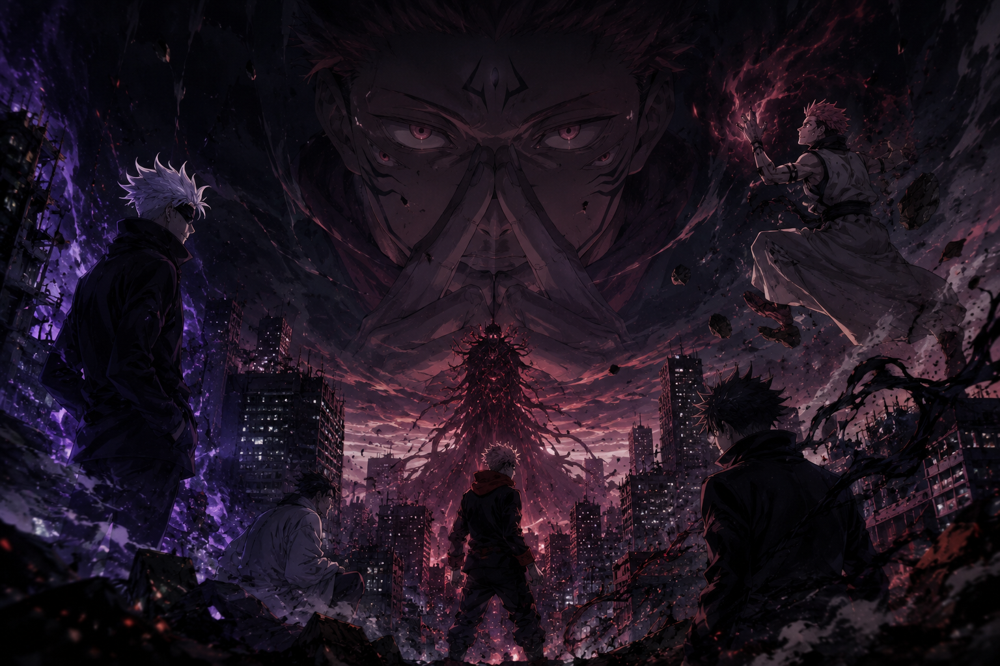

O fim da terceira temporada abriu a guerra definitiva
Depois de adaptar os eventos devastadores do Arco de Shibuya e avançar profundamente no Culling Game, JUJUTSU KAISEN oficialmente confirmou sua 4ª temporada logo após o encerramento da Season 3.
O anúncio rapidamente tomou conta da comunidade anime porque a continuação adapta uma das fases mais intensas e brutais de toda a obra: “Migração à Extinção - Parte 2”.
A nova temporada continuará colocando o Culling Game no centro da narrativa, aprofundando o caos no Japão, o colapso do mundo jujutsu, o avanço dos planos de Kenjaku e o início da reta final definitiva da história.
A confirmação veio logo após o episódio final da terceira temporada no Japão.
A 4ª temporada segue com “Migração à Extinção Parte 2”.
Data de estreia, elenco e equipe adicionais ainda não foram divulgados oficialmente.

O que acontece após a terceira temporada?
A terceira temporada terminou mostrando que o Culling Game não era apenas um torneio mortal. O arco revelou algo muito maior: uma reestruturação completa do mundo.
Kenjaku finalmente começou a colocar em prática o verdadeiro objetivo por trás de todo o caos: forçar a evolução da humanidade através da energia amaldiçoada.
- O Japão mergulha no colapso
- A sociedade jujutsu perde completamente o controle
- Os feiticeiros sobreviventes enfrentam inimigos cada vez mais absurdos
- A guerra real ainda parece estar só começando
O Culling Game se tornou o arco mais ambicioso da obra
O Jogo de Eliminação marcou uma mudança gigantesca no tom de JUJUTSU KAISEN. O arco abandona parcialmente a estrutura escolar inicial do anime e mergulha em algo muito mais sombrio, complexo e imprevisível.
Agora a história gira em torno de sobrevivência, estratégia, filosofia sobre evolução humana e batalhas extremamente violentas.
Além disso, o arco introduziu diversos novos personagens extremamente poderosos, ampliando ainda mais a escala da obra.
Yuji Itadori entra em sua fase mais pesada
Se nas primeiras temporadas Yuji ainda carregava traços mais otimistas, o Culling Game muda completamente o personagem.
Após tudo o que aconteceu em Shibuya, entre mortes, destruição, culpa e o massacre causado por Sukuna, Yuji passa a agir de maneira muito mais fria e determinada.
A quarta temporada promete explorar justamente essa transformação psicológica do protagonista.
Sukuna finalmente assume o centro da história
Outro ponto que elevou absurdamente o hype da continuação é o avanço definitivo de Ryomen Sukuna.
O Rei das Maldições deixa de ser apenas uma ameaça escondida dentro de Yuji e começa a assumir um papel muito mais ativo dentro da narrativa. E isso muda absolutamente tudo.
A partir desse ponto, o equilíbrio de poder desaparece e o mundo jujutsu começa a caminhar para algo próximo do apocalipse.
A evolução absurda da animação do MAPPA
Mesmo com toda a polêmica envolvendo cronograma e condições de produção, o estúdio MAPPA elevou ainda mais o nível visual da franquia ao longo da terceira temporada.
As lutas do Culling Game impressionaram pela fluidez extrema, direção agressiva, impacto visual, uso cinematográfico de câmera e criatividade absurda nas coreografias.
Agora, a expectativa para a Season 4 é gigantesca, principalmente porque os próximos confrontos estão entre os mais aguardados de todo o mangá.
“Migração à Extinção” muda completamente o rumo da obra
O subtítulo citado no anúncio da continuação não é apenas um nome impactante. “Migração à Extinção” representa literalmente a transformação do mundo em direção ao caos absoluto.
Kenjaku acredita que a humanidade precisa evoluir através do conflito e da energia amaldiçoada. E é justamente isso que torna JUJUTSU KAISEN tão diferente de muitos shonens tradicionais.
A obra questiona constantemente
- O valor da vida
- O sentido da evolução
- O conceito de humanidade
- O preço de sobreviver em um mundo quebrado
Gojo ainda continua sendo o centro emocional da série
Mesmo após os eventos recentes da história, Satoru Gojo continua sendo uma presença gigantesca dentro da narrativa.
O impacto de sua ausência alterou completamente o equilíbrio do mundo jujutsu. A quarta temporada promete explorar as consequências deixadas por Gojo, o vazio de poder criado após seus eventos e como os personagens tentam sobreviver sem a figura que sustentava praticamente todo o sistema.
O tom da série ficou ainda mais sombrio
JUJUTSU KAISEN sempre teve elementos pesados, mas o Culling Game leva isso para outro nível. A obra agora trabalha constantemente com desespero, fatalismo, trauma psicológico e sensação de inevitabilidade.
Muitos fãs começaram a comparar essa fase da série com obras muito mais sombrias do que o padrão tradicional do gênero shonen. E isso acabou fortalecendo ainda mais a identidade única da franquia.
O impacto do anúncio da 4ª temporada
A confirmação da continuação gerou enorme repercussão nas redes sociais. O motivo é simples: os próximos acontecimentos do mangá estão entre os mais comentados e explosivos de toda a história de JUJUTSU KAISEN.
A comunidade já começou a especular sobre os grandes confrontos futuros, o retorno de personagens importantes e principalmente como o MAPPA irá adaptar alguns dos momentos mais insanos da obra.
O Culling Game é o ponto sem retorno
Uma das maiores diferenças desse arco é que ele transmite constantemente a sensação de que não existe mais volta. O mundo já foi quebrado, os personagens já passaram dos próprios limites e as consequências agora são permanentes.
- Alguém pode morrer a qualquer momento
- O cenário pode mudar de uma cena para outra
- As regras do mundo jujutsu seguem ruindo
- Tudo pode piorar ainda mais
O futuro de JUJUTSU KAISEN
Com a quarta temporada confirmada, JUJUTSU KAISEN entra oficialmente em sua reta final. A obra de Gege Akutami se consolidou como um dos maiores fenômenos do anime moderno por unir lutas espetaculares, personagens marcantes, terror psicológico e uma narrativa imprevisível.
Agora, o anime se aproxima das fases mais importantes de toda a franquia. E o sentimento entre os fãs é unânime: o pior ainda está por vir.
Onde assistir
As temporadas de JUJUTSU KAISEN estão disponíveis oficialmente na Crunchyroll, responsável pela distribuição internacional da franquia. A nova temporada também deve chegar à plataforma após sua estreia oficial.
Conclusão
A confirmação da 4ª temporada de JUJUTSU KAISEN não representa apenas uma continuação. Ela marca o início da fase mais brutal, intensa e decisiva de toda a obra.
Com o Culling Game avançando para níveis cada vez mais caóticos, o anime entra em um território onde não existem mais garantias, o mundo está desmoronando e até os personagens mais fortes parecem incapazes de impedir o desastre.
JUJUTSU KAISEN deixou de ser apenas uma história sobre maldições. Agora é uma guerra pelo futuro da humanidade.